Django网络框架
virtualenv安装
pip install virtualenv
使用virtualenv '文件夹名' 创建
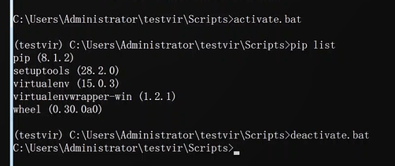 进入与退出虚拟环境
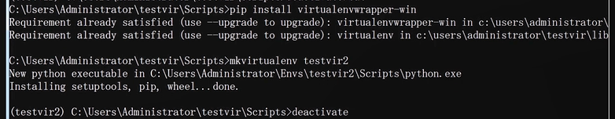 使用mkvirtualenv创建虚拟环境，会将所有的环境装在Envs文件夹中
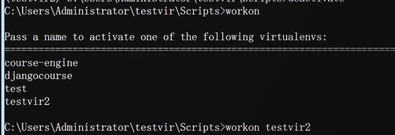 使用workon查看有哪些虚拟环境，并选择进入
http://www.lfd.uci.edu/~gohlke/pythonlibs/#mysql-python 安装mysql-python驱动
django基础知识
django目录结构
projectname：保存django项目的urls，settings，uwsgi文件
static：js、cs、图片文件
log：log日志
media：用户上传的文件
apps：所有app文件
用TOOLS 中的run manage.py来startapp ‘文件’
django链接数据库
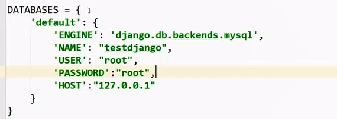 在setting.py中的DATABASES
生成默认数据表
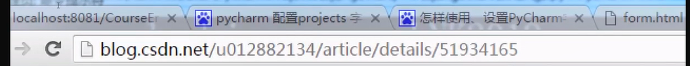 WINDOWS下安装pip install Mysql会出现的问题与解决方法
django配置总结
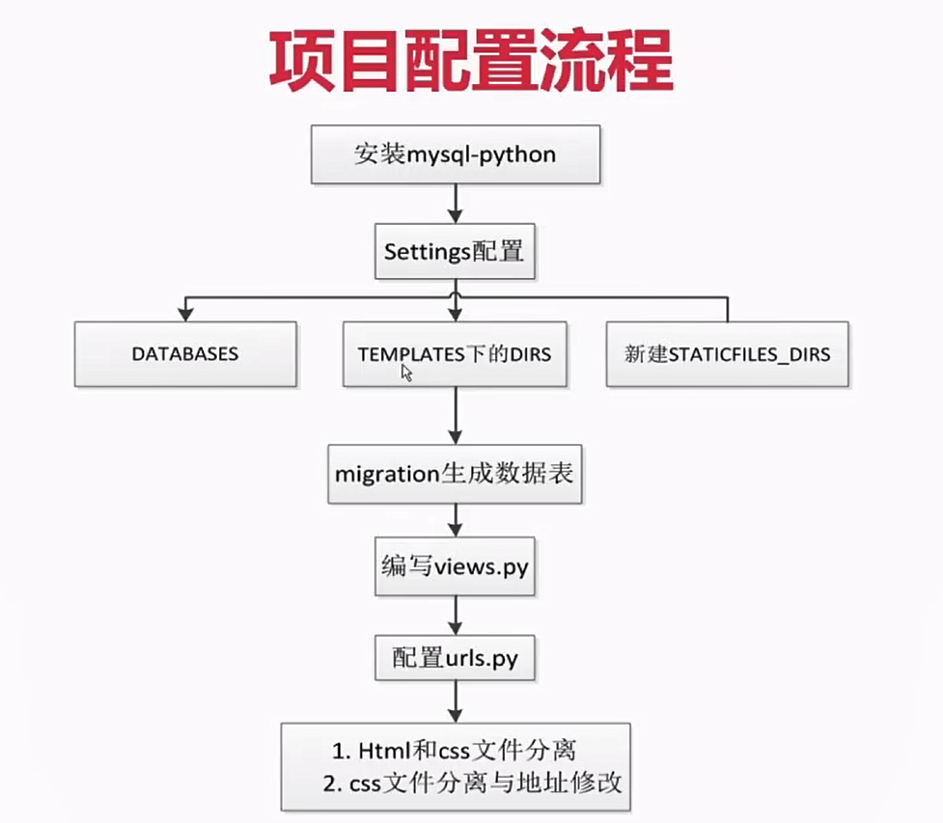
django数据表管理器
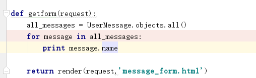
数据库设计
django app设计
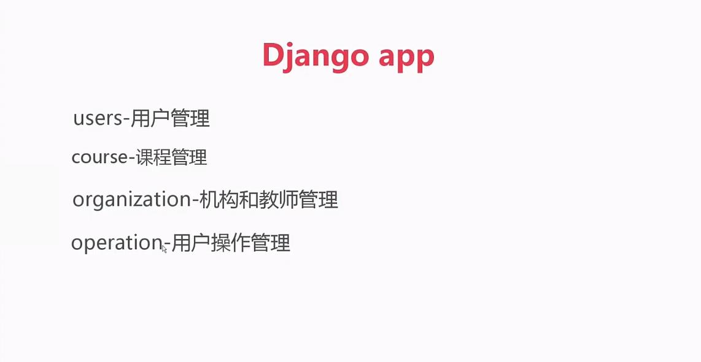
解决循环import问题，采用分层结构 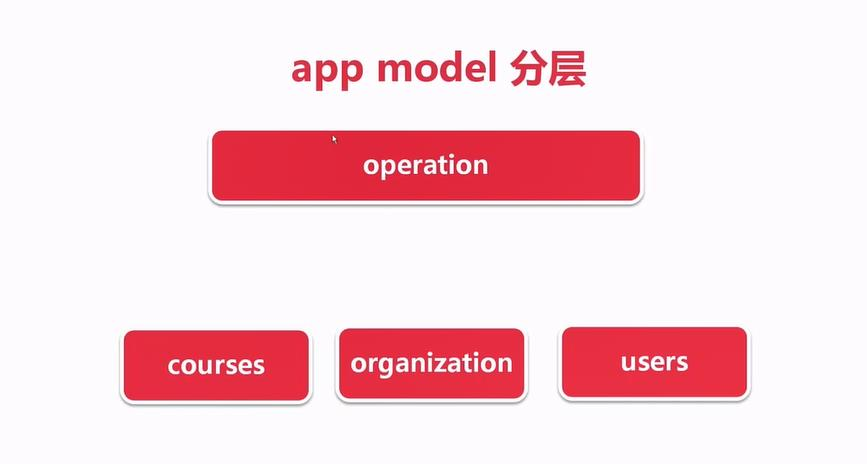 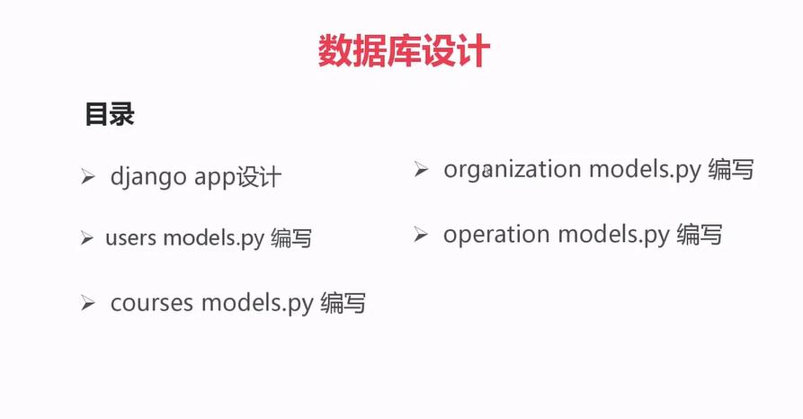
各app models设计
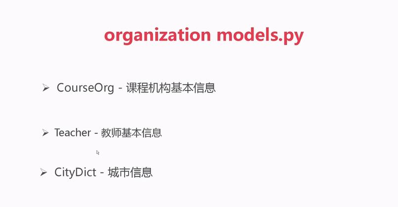
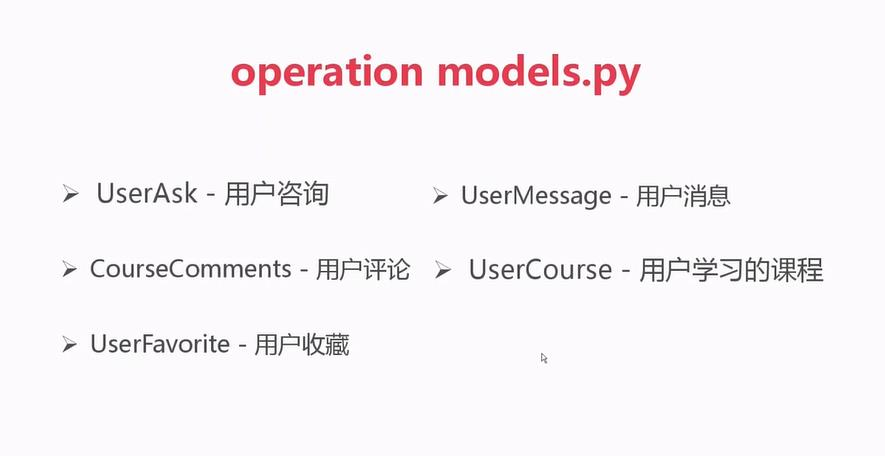
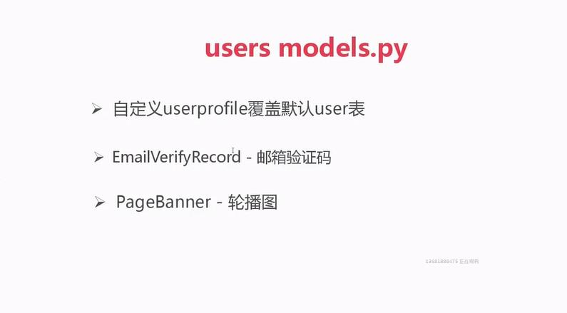
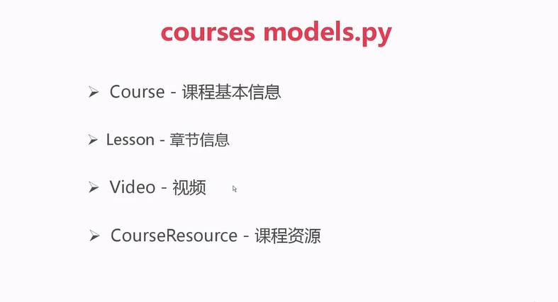